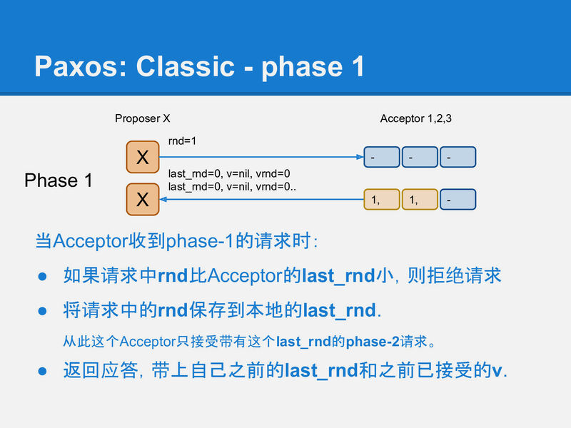
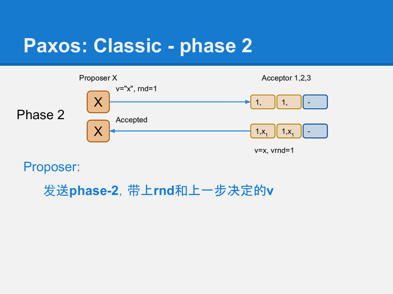
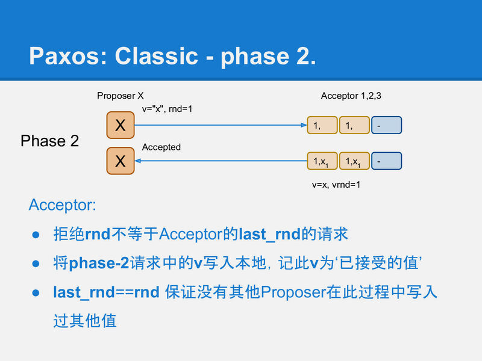

用简单的方式描述 Paxos 协议， 本文来自于对 xp博客 的搬运，整理和总结
分布式和分布式系统
一堆机器 = 分布式 , 一堆互相协同的机器 = 分布式系统
paxos的工作, 就是把一堆运行的机器协同起来, 让多个机器成为一个整体系统. 在这个系统中, 每个机器都必须让系统中的状态达成一致, 例如三副本集群如果一个机器上上传了一张图片, 那么另外2台机器上也必须复制这张图片过来, 整个系统才处于一个一致的状态.
分布式系统的一致性问题最终都归结为分布式存储的一致性. 像aws的对象存储可靠性要求是9~13个9. 而这么高的可靠性都是建立在可靠性没那么高的硬件上的.
列一个常规数据:
1 | 基础设施的可用性: |
几乎所有的分布式存储都必须用某种冗余的方式在廉价硬件的基础上搭建高可靠的存储. 而冗余的基础就是多副本策略, 一份数据存多份. 多副本保证了可靠性, 而副本之间的一致, 就需要paxos这类分布式一致性算法来保证.
甚至单机系统也会采用多副本备份的策略, 例如 纠删码 Erasure Coding 技术，在单机上使用多个硬盘来做冗余，一个例子: RAID。
业界的云盘的存储系统，不论是对象存储，还是块存储，都有使用EC技术。
副本是由复制得来的。
在早些年各种各样的复制策略都被提出来来解决各种场景下的需要. 除了复制的份数之外, 各种各样的算法实际上都是在尝试解决一致的问题.
副本复制策略
主从异步复制
主从异步复制是最简单的策略之一, 主接受读写请求，主接受到的写请求异步复制给从。
存在的问题: 客户端收到一个数据已经安全写入主的返回后, 跟数据真正安全(数据复制到全部的机器上)在时间上有一个空隙, 这段时间 master 如果存储损坏，无法从 slave 中恢复数据，因此它不是一个可靠的复制策略。
例如 Redis 的主从复制，就是异步复制模式
主从同步复制
主从同步复制提供了可靠的一致性。master 在接受到写请求后，同步复制给 slaves，写成功才返回给客户端。
存在的问题: 严重牺牲了系统可用性，整个系统中有任何一个机器宕机, 写入就进行不下去了. 相当于系统的可用性随着副本数量指数降低.
主从半同步复制
在同步和异步之间, 做一个折中, 看起来是一个不错的方案. 这就是半同步复制. 它要求 master 在应答客户端之前必须把数据复制到足够多的机器上, 但不需要是全部. 这样副本数够多可以提供比较高的可靠性; 1台机器宕机也不会让整个系统停止写入.
但是它还是不完美, 例如 数据a 复制到 slave-1, 但没有到达 slave-2; 数据b 复制达到了 slave-2 但没有到达slave-1, 这时如果 master 挂掉了需要从某个 slave 恢复出数据, 任何一个 slave 都不能提供完整的数据. 所以在整个系统中, 数据存在某种不一致.
多数派写
为了解决半同步复制中数据不一致的问题, 可以将这个复制策略再做一改进。就是 多数派读写: 每条数据必须写入到半数以上的机器上. 每次读取数据都必须检查半数以上的机器上是否有这条数据.
在这种策略下, 数据可靠性足够, 宕机容忍足够, 任一机器故障也能读到全部数据.
存在的问题:
就是对于一条数据的更新时, 会产生不一致的状态. 例如:
假设一共3台机器， node-1, node-2, node3。 node-1, node-2都写入了 a=x,
下一次更新时node-2, node-3写入了a=y.
这时, 一个要进行读取a的客户端如果联系到了node-1和node-2, 它将看到2条不同的数据.
后写优胜
为了不产生歧义, 多数派读写还必须给每笔写入增加一个全局递增的时间戳. 更大时间戳的记录如果被看见, 就应该忽略小时间戳的记录. 这样在读取过程中, 客户端就会看到a=x₁, a=y₂ 这2条数据, 通过比较时间戳1和2, 发现y是更新的数据, 所以忽略a=x₁. 这样保证多次更新一条数据不产生歧义.
是的, 但是又来了. 这种带时间戳的多数派读写依然有问题. 就是在客户端没有完成一次完整的多数派写的时候: 例如, 上面的例子中写入, a=x₁写入了node-1和node-2, a=y₂时只有node-3 写成功了, 然后客户端进程就挂掉了, 留下系统中的状态如下:
1 | node-1: a=x₁ |
这时另一个读取的客户端来了,
如果它联系到node-1和node-2, 那它得到的结果是a=x₁.
如果它联系到node-2和node-3, 那它得到的结果是a=y₂.
整个系统对外部提供的信息仍然是不一致的.
Paxos 的出现
待补充
Paxos 算法描述
解决的问题:
- 实现一个可靠的基于多数派写的强一致性存储系统
- 每个 paxos 实例，存储一个值
- 用2轮RPC来确定一个值
- 一个值被确定后，不能修改, 确定指的是被多数派接受写入
Paxos 存在两种变体:
- Classic Paxos: 一个值写入，需要2轮RPC
- Multi Paxos: 一个值写入，大约需要1轮RPC, 第一次RPC做了合并
- Fast Paxos: 没有冲突，1轮RPC; 有冲突, 2轮RPC
paxos算法中解决了如何在不可靠硬件基础上构建一个可靠的分布式系统的方法. 但paxos核心算法中只解决网络延迟/乱序的问题, 它不试图解决存储不可靠和消息错误的问题, 因为这两类问题本质上跟分布式关系不大, 属于数据校验层面的事情.
主要讲解 Classic Paxos 的算法
术语解释
- Proposer 可以理解为客户端.
- Acceptor 可以理解为存储节点.
- Quorum 在99%的场景里都是指多数派, 也就是半数以上的Acceptor.
- Round 用来标识一次paxos算法实例, 每个round是2次多数派读写: 算法描述里分别用phase-1和phase-2标识. 同时为了简单和明确, 算法中也规定了每个Proposer都必须生成全局单调递增的round, 这样round既能用来区分先后也能用来区分不同的Proposer(客户端).
在存储端(Acceptor)也有几个概念:
- last_rnd 是Acceptor记住的最后一次进行写前读取的Proposer(客户端)是谁, 以此来决定谁可以在后面真正把一个值写到存储中.
v 是最后被写入的值. - vrnd 跟v是一对, 它记录了在哪个Round中v被写入了.
v和vrnd是用于恢复一次未完成的paxos用的. 一次未完成的paxos算法运行可能留下一些没有达到多数派的值的写入(就像原生的多数派写的脏读的问题), paxos中通过vrnd来决定哪些值是最后写入的, 并决定恢复哪个未完成的paxos运行. 后面我们会通过几个例子来描述vrnd的作用.
Phase-1
首先是paxos的phase-1, 它相当于之前提到的写前读取过程. 它用来在存储节点(Acceptor)上记录一个标识: 我后面要写入; 并从Acceptor上读出是否有之前未完成的paxos运行. 如果有则尝试恢复它; 如果没有则继续做自己想做的事情.
我们用类似yaml的格式来描述phase-1的请求/应答的格式:
1 | request: |
phase-1成后, acceptor应该记录X的rnd=1, 并返回自己之前保存的v和vrnd.

Proposer X收到多数(quorum)个应答, 就认为是可以继续运行的.如果没有联系到多于半数的acceptor, 整个系统就hang住了, 这也是paxos声称的只能运行少于半数的节点失效.
这时Proposer面临2种情况:
所有应答中都没有任何非空的v, 这表示系统之前是干净的, 没有任何值已经被其他paxos客户端完成了写入(因为一个多数派读一定会看到一个多数派写的结果). 这时Proposer X继续将它要写的值在phase-2中真正写入到多于半数的Acceptor中.
如果收到了某个应答包含被写入的v和vrnd, 这时, Proposer X 必须假设有其他客户端(Proposer) 正在运行, 虽然X不知道对方是否已经成功结束, 但任何已经写入的值都不能被修改!, 所以X必须保持原有的值. 于是X将看到的最大vrnd对应的v作为X的phase-2将要写入的值.
这时实际上可以认为X执行了一次(不知是否已经中断的)其他客户端(Proposer)的修复.

Phase-2
在第2阶段phase-2, Proposer X将它选定的值写入到Acceptor中, 这个值可能是它自己要写入的值, 或者是它从某个Acceptor上读到的v(修复).
同样用类似yaml的方式描述请求应答:
1 | request: |

当然这时(在X收到phase-1应答, 到发送phase-2请求的这段时间), 可能已经有其他Proposer又完成了一个rnd更大的phase-1, 所以这时X不一定能成功运行完phase-2.
Acceptor通过比较phase-2请求中的rnd, 和自己本地记录的rnd, 来确定X是否还有权写入. 如果请求中的rnd和Acceptor本地记录的rnd一样, 那么这次写入就是被允许的, Acceptor将v写入本地, 并将phase-2请求中的rnd记录到本地的vrnd中.
